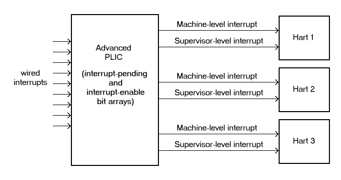
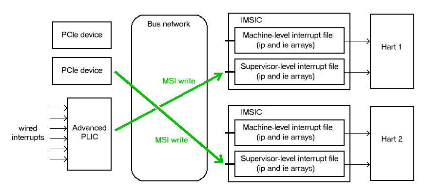

1.1. Introduction
This document specifies the Advanced Interrupt Architecture for RISC-V, consisting of: (a) an extension to the standard RISC-V Privileged Architecture; (b) two standard interrupt controllers for RISC-V systems, an Advanced Platform-Level Interrupt Controller (APLIC) and an Incoming Message-Signaled Interrupt Controller (IMSIC); and (c) requirements on other system components concerning interrupts.
|
Commentary on our design decisions, implementation options, and application is formatted as in this paragraph, and can be skipped if the reader is only interested in the specification itself. |
1.1.1. Goals
The RISC-V Advanced Interrupt Architecture has these goals:
-
Build upon the interrupt-handling functionality of the RISC-V Privileged Architecture, minimizing the replacement of existing functionality.
-
Provide facilities for RISC-V systems to work directly with message-signaled interrupts (MSIs) as employed by PCI Express and other device standards, in addition to basic wired interrupts.
-
For wired interrupts, define a new Platform-Level Interrupt Controller (the Advanced PLIC, or APLIC) that has an independent control interface for each level of privilege (such as RISC-V machine and supervisor levels), and that can convert wired interrupts into MSIs for systems supporting MSIs.
-
Expand the framework for local interrupts at a RISC-V hart.
-
Optionally allow software to configure the relative priorities of all sources of interrupts to a RISC-V hart (including the standard timer and software interrupts, among others), instead of being limited just to the ability of a separate interrupt controller to prioritize external interrupts only.
-
When harts implement the Privileged Architecture’s H extension, provide sufficient assistance for virtualizing these same interrupt facilities for virtual machines.
-
With the help of an IOMMU (I/O memory management unit) for redirecting MSIs, maximize the opportunities and ability for a guest operating system running in a virtual machine to have direct control of devices with minimal involvement of a hypervisor.
-
Avoid having the interrupt hardware be a limiter on the number of virtual machines.
-
Achieve all of the above with the best possible compromises between speed, efficiency, and flexibility of implementation.
This initial version of the Advanced Interrupt Architecture is focused primarily on the needs of larger, high-performance RISC-V systems. Support is not currently defined for the following interrupt-handling features that are useful for minimizing interrupt response times in so-called "real-time" systems but are less appropriate for high-speed processor cores:
-
the option to give each interrupt source at a hart a separate trap entry address;
-
automatic stacking of register values on interrupt trap entry, and restoration on exit; and
-
automatic preemption (nesting) of interrupts at a hart, based on priority.
It is intended that such features optimizing for smaller and/or real-time systems can be developed as a follow-on extension, either separately or as part of a future version of the interrupt architecture of this document.
1.1.2. Limits
In its current version, the RISC-V Advanced Interrupt Architecture can support RISC-V symmetric multiprocessing (SMP) systems with up to 16,384 harts. If the harts are 64-bit (RV64) and implement the H extension, and if all features of the Advanced Interrupt Architecture are fully implemented as well, then for each physical hart there may be up to 63 active virtual harts and potentially thousands of additional idle (swapped-out) virtual harts, where each virtual hart has direct control of one or more physical devices.
Table 1 summarizes the main limits on the numbers of harts, both physical and virtual, and the numbers of distinct interrupt identities that may be supported with the Advanced Interrupt Architecture.
|
We assume that any single RISC-V computer (or any single node in a cluster or distributed system) with many thousands of physical harts will probably need an interrupt infrastructure adapted to the machine’s specific organization, which we do not attempt to predict. |
| Maximum | Requirements | |
|---|---|---|
Physical harts |
16,384 |
|
Active virtual harts having direct control of a device, per physical hart |
31 for RV32, 63 for RV64 |
RISC-V H extension; IMSICs with guest interrupt files; and an IOMMU |
Idle (swapped-out) virtual harts having direct control of a device, per physical hart |
potentially thousands |
An IOMMU with support for memory-resident interrupt files |
Wired interrupts at a single APLIC |
1023 |
|
Distinct identities usable for MSIs at each hart (physical or virtual) |
2047 |
IMSICs |
1.1.3. Overview of main components
A RISC-V system’s overall architecture for signaling interrupts depends on whether it is built mainly for message-signaled interrupts (MSIs) or for more traditional wired interrupts. In systems with full support for MSIs, every hart has an Incoming MSI Controller (IMSIC) that serves as the hart’s own private interrupt controller for external interrupts. Conversely, in systems based primarily on traditional wired interrupts, harts do not have IMSICs. Larger systems, and especially those with PCI devices, are expected to fully support MSIs by giving harts IMSICs, whereas many smaller systems may continue to be best served with wired interrupts and simpler harts without IMSICs.
1.1.3.1. External interrupts without IMSICs
When RISC-V harts do not have Incoming MSI Controllers, external interrupts are signaled to harts through dedicated wires. In that case, an Advanced Platform-Level Interrupt Controller (APLIC) acts as a traditional central hub for interrupts, routing and prioritizing external interrupts for each hart as illustrated in Figure 1. Interrupts may be selectively routed either to machine level or to supervisor level at each hart. The APLIC is specified in Advanced Platform-Level Interrupt Controller (APLIC).
Without IMSICs, the current Advanced Interrupt Architecture does not support the direct signaling of external interrupts to virtual machines, even when RISC-V harts implement the H extension. Instead, an interrupt must be sent to the relevant hypervisor, which can then choose to inject a virtual interrupt into the virtual machine.


1.1.3.2. External interrupts with IMSICs
To be able to receive message-signaled interrupts (MSIs), each RISC-V hart must have an Incoming MSI Controller (IMSIC) as shown in Figure 2. Fundamentally, a message-signaled interrupt is simply a memory write to a specific address that hardware accepts as indicating an interrupt. To that end, every IMSIC is assigned one or more distinct addresses in the machine’s address space, and when a write is made to one of those addresses in the expected format, the receiving IMSIC interprets the write as an external interrupt for the respective hart.
Because all IMSICs have unique addresses in the machine’s physical address space, every IMSIC can receive MSI writes from any agent (hart or device) with permission to write to it. IMSICs have separate addresses for MSIs directed to machine and supervisor levels, in part so the ability to signal interrupts at each privilege level can be separately granted or denied by controlling write permissions at the different addresses, and in part to better support virtualizability (pretending that one privilege level is a higher level). MSIs intended for a hart at a specific privilege level are recorded within the IMSIC in an interrupt file, which consists mainly of an array of interrupt-pending bits and a matching array of interrupt-enable bits, the latter indicating which individual interrupts the hart is currently prepared to receive.
IMSIC units are fully defined in Incoming MSI Controller (IMSIC). The format of MSIs used by the RISC-V Advanced Interrupt Architecture is described in that chapter, MSI encoding.
When the harts in a RISC-V system have IMSICs, the system will normally still contain an APLIC, but its role is changed. Instead of signaling interrupts to harts directly by wires as in Figure 1, an APLIC converts incoming wired interrupts into MSI writes that are sent to harts via their IMSIC units. Each MSI is sent to a single target hart according to the APLIC’s configuration set by software.
If RISC-V harts implement the H extension, IMSICs may have additional guest interrupt files for delivering interrupts to virtual machines. Besides Incoming MSI Controller (IMSIC) on the IMSIC, see Interrupts for Virtual Machines (VS Level) which specifically covers interrupts to virtual machines. If the system also contains an IOMMU to perform address translation of memory accesses made by I/O devices, then MSIs from those same devices may require special handling. This topic is addressed in IOMMU Support for MSIs to Virtual Machines.
1.1.3.3. Other interrupts
In addition to external interrupts from I/O devices, the RISC-V Privileged Architecture specifies a few other major classes of interrupts for harts. The Privileged Architecture’s timer interrupts remain supported in full, and software interrupts remain at least partly supported, although neither appears in Figure 1 and Figure 2. For the specifics on software interrupts, refer to Interprocessor Interrupts (IPIs).
The Advanced Interrupt Architecture adds considerable support for local interrupts at a hart, whereby a hart essentially interrupts itself in response to asynchronous events, usually errors. Local interrupts remain contained within a hart (or close to it), so like standard RISC-V timer and software interrupts, they do not pass through an APLIC or IMSIC.
1.1.4. Interrupt identities at a hart
The RISC-V Privileged Architecture gives every interrupt cause at a hart a
distinct major identity number, which is the Exception Code
automatically written to CSR mcause or scause on an interrupt trap. Interrupt causes
that are standardized by the base Privileged Architecture have major
identities in the range 0-15, while numbers 16 and higher are officially
available for platform standards or for custom use. The Advanced
Interrupt Architecture claims further authority over identity numbers in
the ranges 16-23 and 32-47, leaving numbers in the range 24-31 and all
major identities 48 and higher still free for custom use.
Table 1 characterizes all
major interrupt identities with this extension.
| Major identity | Minor identity | |
|---|---|---|
0 |
- |
Reserved by base Privileged Architecture |
1 |
- |
Supervisor software interrupt |
4 |
- |
Reserved by base Privileged Architecture |
5 |
- |
Supervisor timer interrupt |
8 |
- |
Reserved by base Privileged Architecture |
9 |
Determined by |
Supervisor external interrupt |
12 |
- |
Supervisor guest external interrupt |
16-23 |
- |
Reserved for standard local interrupts |
24-31 |
- |
Designated for custom use |
32-34 |
- |
Reserved for standard local interrupts |
≥48 |
- |
Designated for custom use |
Interrupts from most I/O devices are conveyed to a hart by the external interrupt controller for the hart, which is either the hart’s IMSIC (Figure 2) or an APLIC (Figure 1). As Table 1 shows, external interrupts at a given privilege level all share a single major identity number: 11 for machine level, 9 for supervisor level, and 10 for VS-level. External interrupts from different causes are distinguished from one another at a hart by their minor identity numbers supplied by the external interrupt controller.
Other interrupt causes besides external interrupts might also have their own minor identities. However, this document has need to discuss minor identities only with regard to external interrupts.
The local interrupts defined by the Advanced Interrupt Architecture and their handling are covered mainly in Interrupts for Machine and Supervisor Levels, "Interrupts for Machine and Supervisor Levels."
1.1.5. Selection of harts to receive an interrupt
Each signaled interrupt is delivered to only one hart at one privilege level, usually determined by software in one way or another. Unlike some other architectures, the RISC-V Advanced Interrupt Architecture provides no standard hardware mechanism for the broadcast or multicast of interrupts to multiple harts.
For local interrupts, and for any "virtual" interrupts that software injects into less-privileged levels at a hart, the interrupts are entirely a local affair at the hart and are never visible to other harts. The RISC-V Privileged Architecture’s timer interrupts are also uniquely tied to individual harts. For other interrupts, received by a hart from sources outside the hart, each interrupt signal (whether delivered by wire or by an MSI) is configured by software to go to only a single hart.
To send an interprocessor interrupt (IPI) to multiple harts, the originating hart need only execute a loop, sending an individual IPI to each destination hart. For IPIs to a single destination hart, see Interprocessor Interrupts (IPIs).
|
The effort that a source hart expends in sending individual IPIs to multiple destinations will invariably be dwarfed by the combined effort at the receiving harts to handle those interrupts. Hence, providing an automated mechanism for IPI multicast could be expected to reduce a system’s total overall work only modestly at best. With a very large number of harts, a hardware mechanism for IPI multicast must contend with the question of how exactly software specifies the intended destination set with each use, and furthermore, the actual physical delivery of IPIs may not differ that much from the software version. We do not exclude the future possibility of an optional hardware mechanism for multicast IPI, but only if a significant advantage can be demonstrated in real use. As of 2020, Linux has been observed not to make use of multicast IPI hardware even on systems that have it. |
In the rare event that a single interrupt from an I/O device needs to be communicated to multiple harts, the interrupt must be sent to a single hart which can then signal the other harts by IPIs.
|
We contend that the need to communicate an I/O interrupt to multiple harts is sufficiently rare that standardizing hardware support for multicast cannot be justified in this case. Along with multicast delivery, other architectures support an option for "1-of- " delivery of interrupts, whereby the hardware chooses a single destination hart from among a configured set of harts, with the goal of automatic load balancing of interrupt handling among the harts. Experiments in the 2010s called into question the utility of 1-of- modes in practice, showing that software could often do a better job of load balancing than the hardware algorithms implemented in actual chips. Linux was consequently modified to discontinue using 1-of- interrupt delivery even on systems that have it. We remain open to the argument that hardware load balancing of interrupt handling may be beneficial for certain specialized markets, such as networking. However, the claims made so far in this regard do not justify requiring support for 1-of- delivery in all RISC-V servers. With more evidence, some mechanism for 1-of- delivery might become a future option. The original Platform-Level Interrupt Controller (PLIC) for RISC-V is configurable so each interrupt source signals external interrupts to any subset of the harts, potentially all harts. When multiple harts receive an external interrupt from a single cause at the PLIC, the first hart to claim the interrupt at the PLIC is the one responsible for servicing it. Usually this sets up a race, where the subset of harts configured to receive the multicast interrupt all take an external interrupt trap simultaneously and compete to be the first to claim the interrupt at the PLIC. The intention is to provide a form of 1-of- interrupt delivery. However, for all the harts that fail to win the claim, the interrupt trap becomes wasted effort. For the reasons already given, the Advanced PLIC supports sending each signaled interrupt to only a single hart chosen by software, not to multiple harts. |
1.1.6. ISA extensions Smaia and Ssaia
The Advanced Interrupt Architecture (AIA) defines two names for extensions to the RISC-V instruction set architecture (ISA), one for machine-level execution environments, and another for supervisor-level environments. For a machine-level environment, extension Smaia encompasses all added CSRs and all modifications to interrupt response behavior that the AIA specifies for a hart, over all privilege levels. For a supervisor-level environment, extension Ssaia is essentially the same as Smaia except excluding the machine-level CSRs and behavior not directly visible to supervisor level.
Extensions Smaia and Ssaia cover only those AIA features that impact the ISA at a hart. Although the following are described or discussed in this document as part of the AIA, they are not implied by Smaia or Ssaia because the components are categorized as non-ISA: APLICs, IOMMUs, and any mechanisms for initiating interprocessor interrupts apart from writing to IMSICs.
As revealed in subsequent chapters, the exact set of CSRs and behavior added by the AIA, and hence implied by Smaia or Ssaia, depends on the base ISA’s XLEN (RV32 or RV64), on whether S-mode and the H extension are implemented, and on whether the hart has an IMSIC. But individual AIA extension names are not provided for each possible valid subset. Rather, the different combinations are inferable from the intersection of features indicated (such as RV64I + S-mode + Smaia, but without the H extension).
Software development tools like compilers and assemblers need not be concerned about whether an IMSIC exists but should just allow attempts to access the IMSIC CSRs (described in Control and Status Registers (CSRs) Added to Harts and Incoming MSI Controller (IMSIC)) if Smaia or Ssaia is indicated. Without an actual IMSIC, such attempts may trap, but that is not a problem for the development tools.
If extension Smaia/Ssaia is implemented, then anywhere that the AIA specification has an irreconcilable conflict with the requirements of another implemented RISC-V extension, the AIA is intended to have priority, unless the other extension explicitly extends or overrides the AIA.
|
Extension Smcsrind/Sscsrind explicitly extends
the AIA’s facility for indirect CSR access provided by
the |